Overview
Basically, this tutorial is about correcting the imported FBX camera from CRYENGINE Track View. The imported camera initially is not aiming correctly at the right axes. We have to fix it in the progress of this tutorial. Finally, we must also match the FOV value and other camera settings to the CRYENGINE camera view.
Import FBX scene objects and camera
From the previous tutorial you exported your animated camera and the scene objects to two separate FBX files..
- Start 3dsMax with an empty scene or "Reset" if your 3dsMax is already opened.
- Get the FBX scene objects by MAX -> Import -> Import. Browse to the FBX file with the (non-animated) scene objects and hit open in the File Browse Dialog.
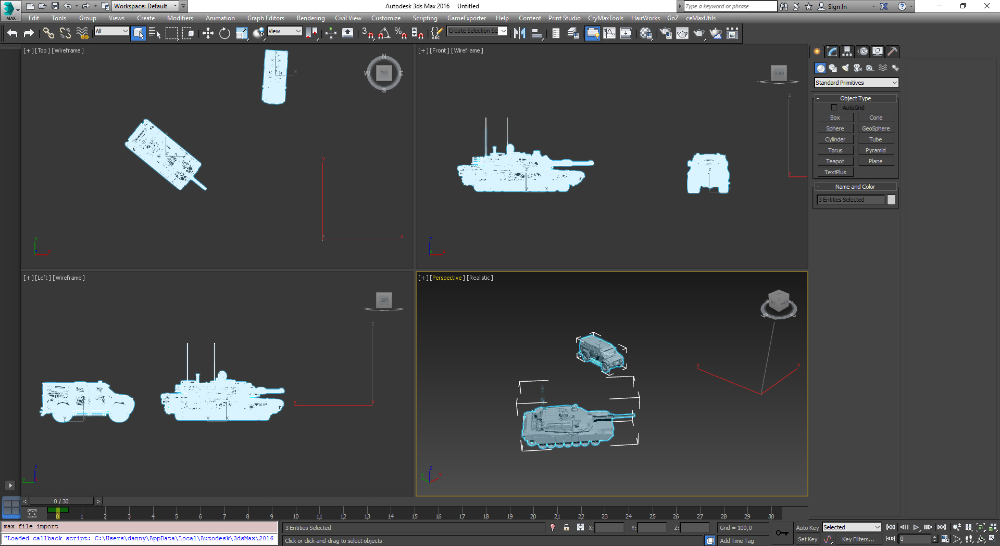
(img01: FBX scene objects imported to 3dsMax) Frame the CRYENGINE scene objects in your opened viewport to verify they are all imported correctly into 3dsMax (except the CRYENGINE terrain if you didn't add a Area entity into your level).
Your scene objects are probably floating above the XY-plane. You may add a 3dsMax Plane object as a replacement terrain.The Abrams tank is missing its tracks after the import. This is due to the fact, that the Abrams tank (a Vehicle entity) consists of two entities, a *.CGA (tank hull) and a *.CHR (tank tracks).Now we need to import the camera animation from the second FBX file. Follow the step 2 to import this FBX camera animation.
Usually, your file exported from Track View of Sandbox Editor has a "MasterCamera" and any additional camera entity you made in CRYENGINE.
You will get one camera, named "MasterCamera", whose transformations does not look correct and a 2nd helper node named "Camera1" which also has your animation data. We will only fix the transformation of the "MasterCamera". This is the main goal we must achieve in the progression of this tutorial:
Re-aligning the imported FBX camera in 3dsMax to match the CRYENGINE camera.
It would be a good assignment, if you also try to fix the transformation of the "Camera1" node. For this you need to add an additional 3dsMax Free camera (the one without the Target node) and align and link it to the "Camera1" transformation.
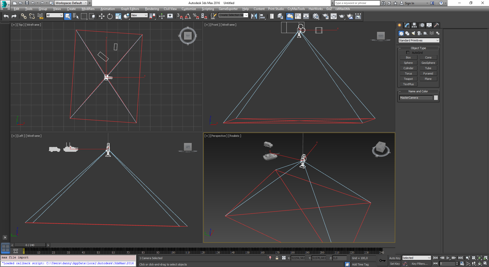
(img02: FBX scene objects with imported camera whose orientation does not match the CRYENGINE camera.)- Before we move on, we should set up a viewport to show the actual imported FBX camera. In the picture below we configured a Camera viewport beside our
Perspective and an orthogonal viewport. Feel free to arrange any viewport that suits you. Just make sure, you have one viewport camera which is looking through the "MasterCamera".
In the screenshot below, we also added a ground plane to the scene which matches roughly the height as was in CRYNEGINE.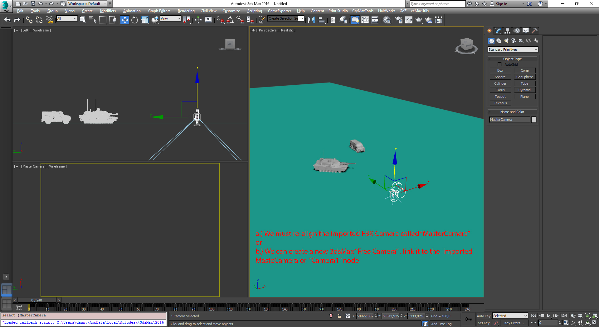
(img03: New viewport layout with a MasterCamera viewport and a new ground plane)
( Notice the "MasterCamera" viewport is empty because it is pointing downwards and not to the tank/SWAT van as in CRYENGINE)
Re-Align the imported CRYENGINE camera
In this section, we will add a Rotation List controller with two Euler_XYZ controllers, one which already holds the importd animation and a second which adds some 90° rotational offsets to the "MasterCamera" to its local axes.
- Select the camera named "MasteraCamera".
- Replace its default "Euler_XYZ" rotation controller by a "Rotation_List" controller. But don't delete the old "Euler XYZ" which get automatically included into the "Rotation List". It holds the imported FBX camera animation.
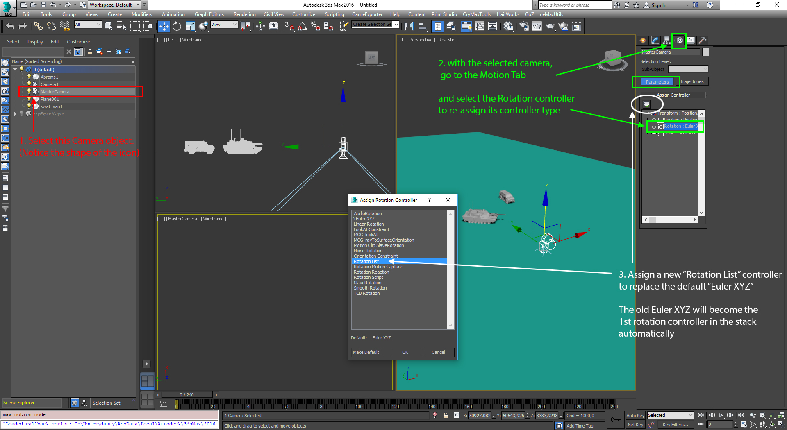
(img04: Replace the standard Euler XYZ by a more versatile "Rotation List" controller) - Add a new "Euler_XYZ" to the "Available" sub-controller of the "Rotation_List".
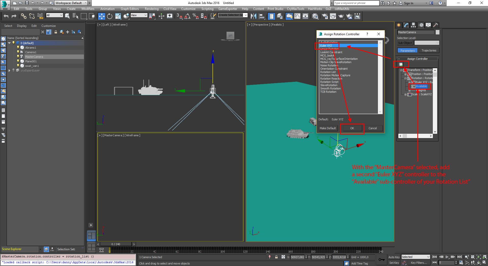
(img05: Add a new "Euler XYZ" to "Rotation List") - We renamed the stacked rotation sub-controllers, to give you a better impression, what controller is for:
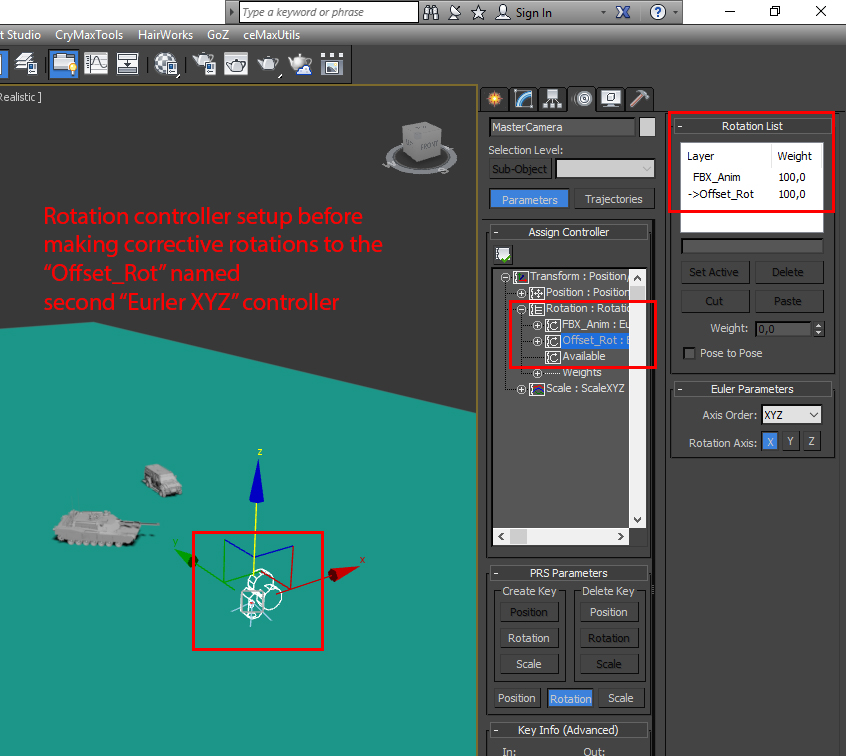
(img06: Finished "Rotation List" controller setup before we add the corrective rotation) - Before we offset the camera rotation, make sure your active rotation controller is the "Offset_Rot" controller.
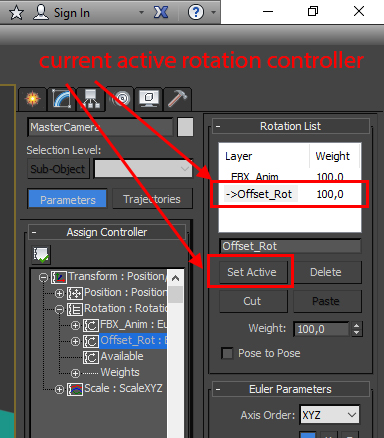
(img07: Set "Offset_Rot" as active rotation controller) - Finally we can add the offset rotation needed to fix the "MasterCamera" orientation. Please now be careful to follow each steps to avoid mistakes:
Select the "MasterCamera" in a perspective viewport if not done already.
- Switch the Rotation Tool by pressing "E" key
Switch to local coordinate system of the "MasterCamera" by pressing"Alt" key + RightMouseButton-Click in your perspective viewport and choose "Local":
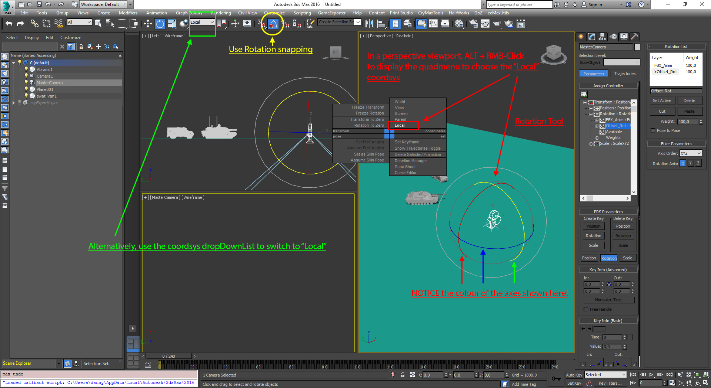
Pay attention to be in LOCAL space/coordinate system when you add the offset rotation to the camera
- Now we rotate our "MasterCamera" in 90° angles to re-orient until we get a camera perspective that only need a correction in FOV/lens and render resolution. We had to rotate the local X and Y in +/- 90° steps.
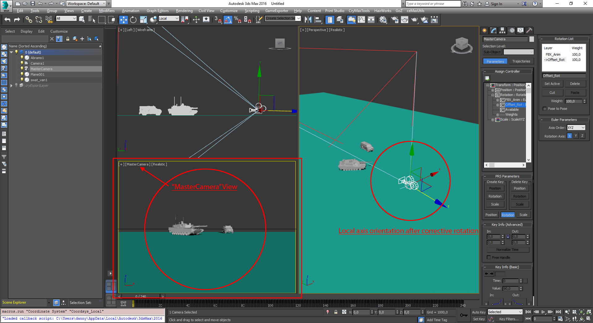
(img09: Camera orientation fixed)
Common Pitfalls:
- You switch to Local coordsys BEFORE you're in Rotate Tool ("E" key).
- Remember: 3dsMax stores for each Move/Rotate/Scale Tool ("W", "E", "R" key) its own coordinate system it is transforming. Thus, your Move Tool may use Screen coordsys, but Rotate Tool is in Local coordsys, while Scale Tool transforms in World coordsys.
- Have the wrong sub-controller of your "Rotation List" activated when you make the offset rotation.
- Apply offset rotation directly onto the original animation data -> Did not make use of a "Rotation List" controller and encapsulate the original animation data and corrective rotation offset in TWO separate sub-controllers.
- Only the first frame of your camera animation is fixed: Scrub the time slider to the last frame and check by eyeballing the results! See iii.
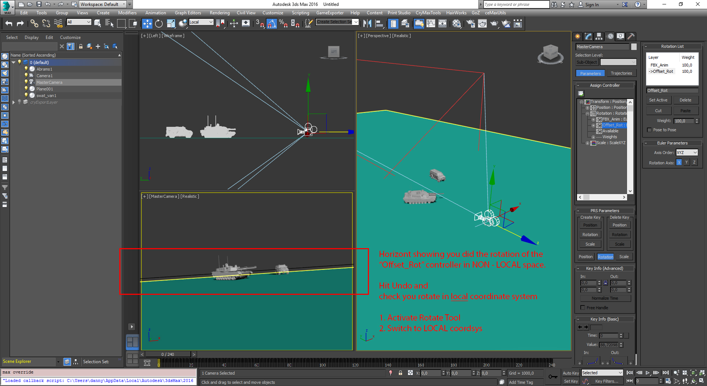
Matching the 3dsMax camera settings to CRYENGINE camera
Now it's time for us to set up the "MasterCamera" in 3dsMax to match the CRYENGINE camera viewport. Remember the FOV/FPS/Camera Resolution in Sandbox Editor we made?
- You should have both the CRYENGINE scene and 3dsMax scene opened. This makes a lot easier to see what changes are doing what.
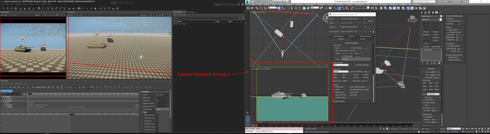
(img10: Prepare CRYENGINE and 3dsMax to be on two monitors. Below we can see the finished and matched cameras) With your "MasterCamera" selected, go to 3dsMax Modify Panel to see the camera parameters we must change.
In order to set the FOV angle for the 3dsMax camera correctly, you must know, that the FOV angle you set in CRYENGINE is measured vertically. Keep in mind, you should also know the camera output resolution or at least the aspect ratio to get a correct camera match in both CRYENGINE and your target 3D application (Maya, 3dsMax, Cinema4d, Blender, etc)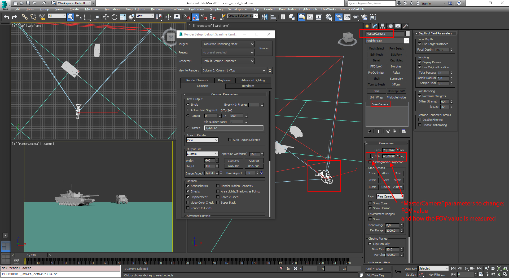
(img11: Change these 3dsMax camera settings)- We also need to change the camera output resolution to what you set back in CRYENGINE: in our case, it's 640 x 480
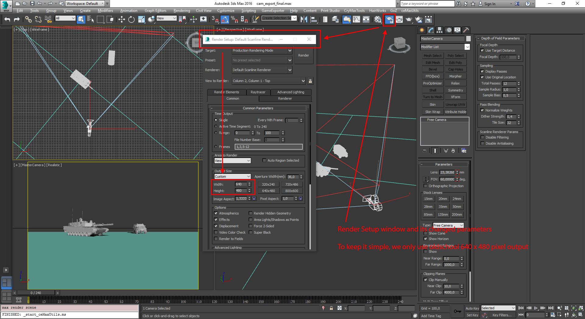
(img12: render output of the 3dsMax camera) - You should also check that 3dsMax is in 30 fps, since our animation in CRYENGINE was 240 frames long. The last option you should activate is,
whenever you have a real camera involved, you really want to see the camera frames to match: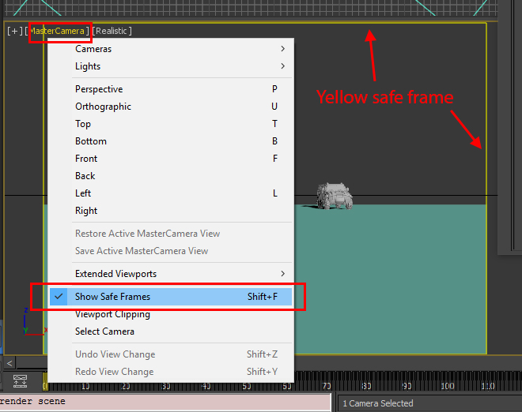
(img13: Safe Frame turned on) - With these camera settings, your output here should match what you created in CRYENGINE.
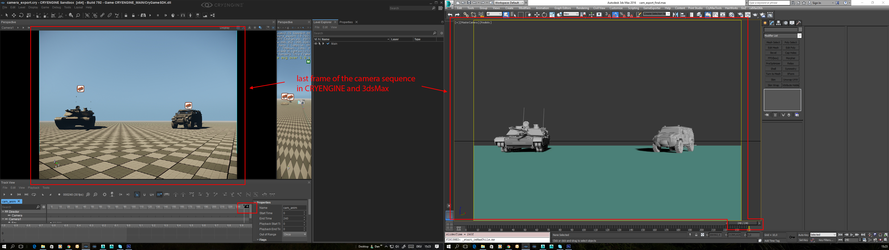
(img14: Finished and matched cameras in 3dsMax & CRYENGINE)
MAXScript function for FOV conversion
Here is a function you can use to convert the CRYENGINE camera FOV to any FOV used by other 3d programs:
function ceFn_convertFOV argWidth argHeight argVerticalFOV =
(
clearListener()
-- convert user input parameters to float values
fVertFOVAngleDeg = argVerticalFOV as float
fWidth = argWidth as float
fHeight = argHeight as float
aspectRatio = undefined
fHorFOVAngleDeg = undefined
iConversionCase = 1
-- FOV conversion calculations
try
(
-- calculate aspect ratio by given pixel width and height of the camera resolution
aspectRatio = fWidth / fHeight
format "\nAspect ratio: %\n" aspectRatio
case (iConversionCase) of
(
1: -- case 1: convert vertical to horizontal FOV
(
fDistance1 = fHeight / (2.0 * tan(fVertFOVAngleDeg / 2.0))
format "\nDistance: %\n" fDistance1
res1 = 2.0 * atan (fWidth / (2.0 * fDistance1))
format "\nconverted horizontal FOV: % \n" res1
fHorFOVAngleDeg = res1
-- case 2: convert horizontal back to vertical FOV for testing the correctness
fDistance2 = fWidth / (2.0 * tan(fHorFOVAngleDeg / 2.0))
format "\nDistance: %\n" fDistance2
res2 = 2.0 * ( atan ( fHeight / (2.0 * fDistance2) ))
format "\nconverted vertical FOV: % \n" res2
-- case 3: convert vertical FOV to diagonal FOV
fDistance3 = fHeight / (2.0 * tan(fVertFOVAngleDeg / 2.0))
format "\nDistance: %\n" fDistance3
fDiagonal = sqrt( (pow fWidth 2) + (pow fHeight 2) )
res3 = 2.0 * ( atan (( fDiagonal / (2.0 * fDistance3) )) )
format "\nconverted diagonal FOV: % " res3
)
)
)
catch
(
messageBox "Exception thrown by ceFn_convertFOV()"
)
)
-- example function call for a resolution of 640 x 480 pixels and a vertical FOV of 60° as used by CRYENGINE Sandbox Editor
ceFn_convertFOV 640 480 60